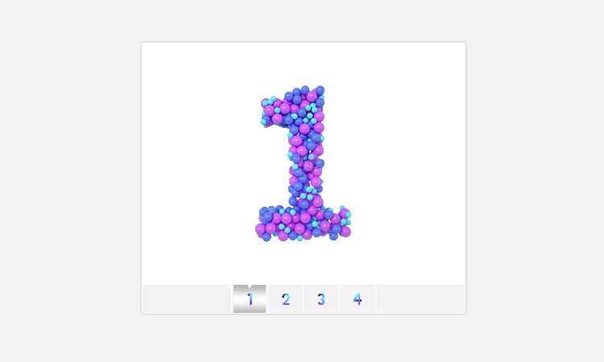
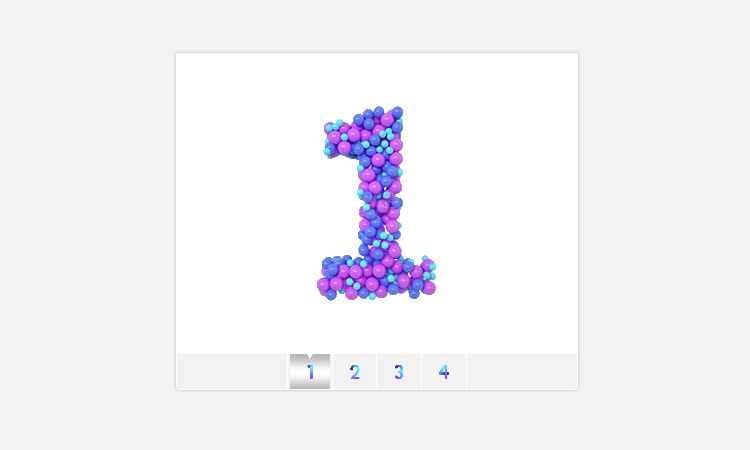
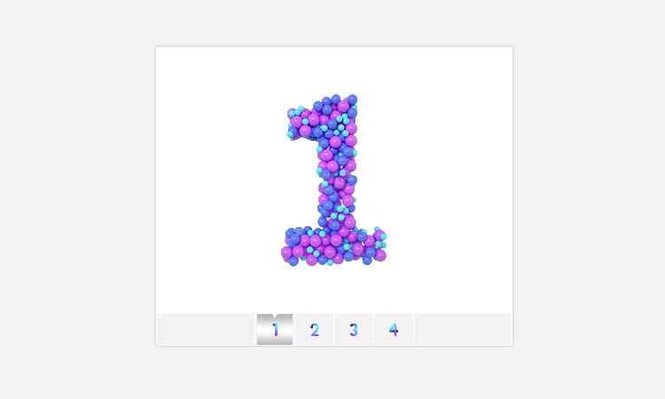

RS
card
关于
技能
作品
作品1
作品2
作品3
博客
博客1
博客2
博客3
日历
联系方式
其他
Hello
刚圆圆
前端开发工程师
年龄
24
所在城市
青岛
邮箱
296671396@qq.com
手机
17866625379
下载 PDF 简历
刚圆圆， 前端工程师。
技能：前端开发。
技能
HTML 5 & CSS 3
JavaScript
jQuery
Vue.js
React.js
Node.js
作品集


 
